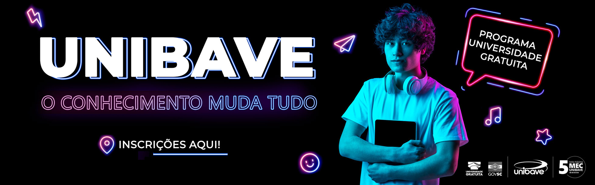

- ENSINO
- Graduação
- Jovem Aprendiz
- Pós-graduação
- Técnico
- Cursos Livres
- Qualificação profissional
PESQUISA
CEUA UNIBAVE
Comitê de Ética em Pesquisa - CEP
Senpex
EXTENSÃO
Brinquedoteca
Casa da Cidadania
Centro de Recreação e Lazer
Estação Meteorológica
Farmácia Universitária
Horta Agroecológica
Hospital Veterinário Unibave
Inventa
Museu ao Ar Livre Princesa Isabel
Nícleo de Pesquisa e Extensão
Núcleo de Práticas Psicológicas
ESTUDE NO UNIBAVE
INSTITUCIONAL
Acessibilidade e inclusão
Agenda
Avaliação Institucional
Clipagem
Direitos Humanos
Documentos
Manual da MArca
Mantenedora
Notícias
Reitoria
Internaciolização
Onde estamos
Ouvidoria
Publicações Legais
NOTÍCIAS
VER MAIS NOTÍCIAS
INSTITUCIONAL - 25/06/2024
Direito trabalhista é tema de palestra para alunos do Ceja de Orleans
CURSOS - 24/06/2024
Alunos do curso Técnico em Agropecuária do Unibave participam de palestra internacional
INSTITUCIONAL - 21/06/2024
Unibave é homenageada com o Troféu Amigo da Educação
CURSOS - 17/06/2024
Marketing na Betha Sistemas “bate-papo” com acadêmicos de ADM no Unibave
INSTITUCIONAL - 17/06/2024
Acadêmicos de História da Unesc visitam o Museu ao Ar Livre
CURSOS - 14/06/2024
Unibave promove o evento alusivo ao Mês do Orgulho LGBTQIA+
AGENDA
VER MAIS EVENTOS
23/08
Formatura em Gabinete
EDITAIS
VER MAIS
067/2024
Dispõe o cronograma e demais procedimentos relativos ao processo d...
066/2024
Dispõe sobre OFERTA, INSCRIÇÃO E MATRÍCULA na Disciplina de Clínic...
065/2024
Dá nova redação ao EDITAL Nº 051/2024/UNIBAVE que dispõe sobre as ...
064/2024
Dá nova redação ao EDITAL Nº 053/2024/UNIBAVE que dispõe sobre as ...
LINKS ÚTEIS
E-mail
Moradia
Sistema Acadêmico
AVA
Oportunidades de Trabalho
Transporte
Resultados
Estágio
Calendário
Documentos
TOPO
Mantenedora:
LogoLogoLogo
Mantidas:
Parceiros:
Facebook
Instagram
Whatsapp
(48) 3466 5600
Rua Pe. João Leonir Dall’Alba, 601
Bairro Murialdo - Orleans/SC
© 2020 Unibave | Desenvolvido por: Unibave